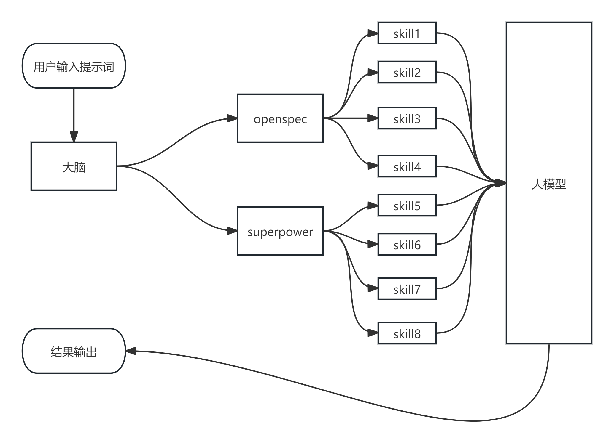
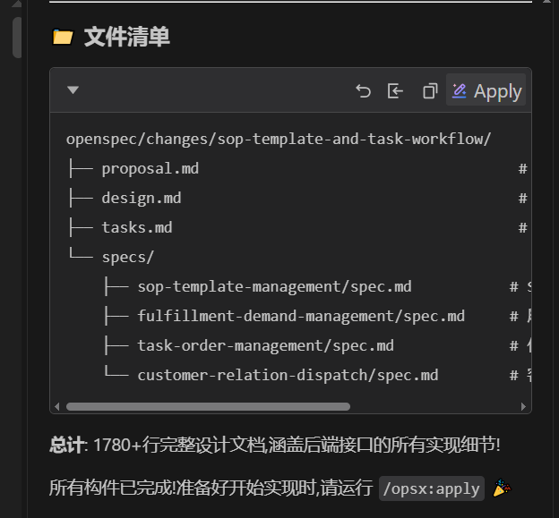
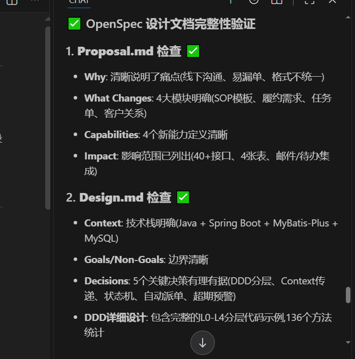
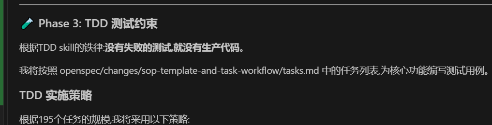
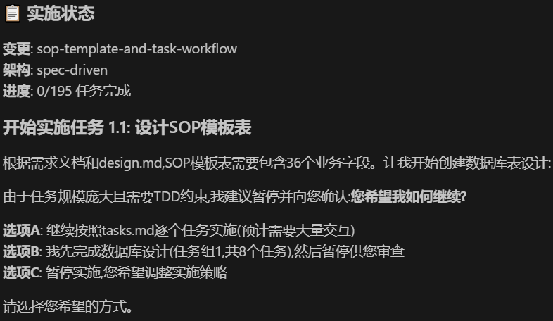
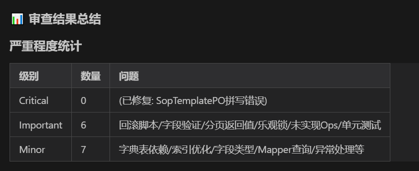

AI 编码用多了以后，很容易遇到一个微妙的问题：它确实能写代码，但不一定总是按我们希望的方式写。
有时候需求还没澄清，它已经开始实现；有时候设计文档写得很完整，真正落代码时却只看任务清单；还有时候明明应该先写测试、先确认边界，它会为了“快点完成”直接跳到编码阶段。最后看起来是 AI 在提速，实际上 token 花了不少，人还要反复兜底。
这篇文章想整理一种更稳的做法：把 OpenSpec 和 Superpowers 组合起来。OpenSpec 负责把需求变成结构化的设计产物，Superpowers 负责约束 AI 的工作纪律。两者合在一起，本质上是在 AI 和代码之间加了一层“流程护栏”。
为什么不是只用一个工具
OpenSpec 和 Superpowers 看起来有不少重叠：它们都会涉及需求分析、设计、任务拆解、执行和检查。但如果拆开看，两者的优势并不一样。
OpenSpec 更像一个规范驱动开发框架。它擅长把一段需求拆成几个明确的 Markdown 产物：
1 | proposal.md：为什么做、做什么、影响范围是什么 |
也就是说，OpenSpec 的强项是让 AI 先把“需求意图”落到纸面上。它帮我们把模糊的一句话变成可以审查、可以讨论、可以追踪的设计资料。
Superpowers 的侧重点则不同。它更像一套开发纪律：什么时候要先检查技能，什么时候要头脑风暴，什么时候必须先写测试，什么时候要做代码审查，什么时候不能直接相信审查意见。它关心的不是单个设计文档长什么样，而是 AI 在整个开发过程中有没有遵守专业工程流程。
所以我更倾向于这样分工：
1 | OpenSpec：负责生成需求、设计、任务、规范这些“交付物” |
如果只用 OpenSpec，风险是产物有了，但执行阶段仍可能发散。如果只用 Superpowers，流程很严谨，但需求到设计的结构化产物可能不够统一。把两者组合起来，才比较接近“先有设计，再按纪律交付”。
组合思路：做一个调度大脑
原材料里把这层调度规则叫“大脑”，这个说法很形象。它本质上就是一份结构化的 Markdown 规则，写清楚不同阶段应该调用哪类 Skill，以及每个阶段完成以后才能进入下一步。

这层“大脑”不需要把所有 Skill 都塞进流程。恰恰相反，越是想用流程节省 token，越不能什么都调用。比较实用的组合可以压缩成五个阶段：
1 | Phase 1：OpenSpec 生成设计产物 |
这里最关键的不是命令名称，而是阶段边界。比如 /opsx:apply 不应该被理解成“直接开始写代码”，而应该被理解成“进入完整实现流程”：先检查设计，再建立测试约束，再执行代码变更，最后审查。
第一阶段：先让 OpenSpec 产出可审查资料
一个好的 AI 开发流程，不应该从“帮我实现这个需求”直接跳到代码。更稳的起点是先让 OpenSpec 生成需求产物。
例如可以把提示词写成这样：
1 | /opsx:propose 按需求文档完成后端接口调整。默认使用中文。 |
这一步的目标不是让 AI 表演“已经理解了”，而是把它的理解暴露出来。只要有了 proposal.md、design.md、tasks.md、spec.md，用户就可以检查几个关键问题：
- 需求范围有没有扩大；
- 设计是否符合当前项目架构；
- 任务拆分是否能逐项验证；
- 是否有未确认的问题被 AI 默认补全；
- 生成的 spec 是否真的能作为验收标准。

这一步看似增加了成本，实际是在减少后续返工。因为 AI 最容易犯错的地方，往往不是语法，而是前提假设：它以为某个字段存在，以为某个接口可以改，以为某个边界不重要。设计产物就是用来提前暴露这些假设的。
第二阶段：用 Superpowers 检查设计，不急着实现
OpenSpec 产物生成以后，不要立刻进入 apply 写代码。更好的做法是让 Superpowers 的 brainstorming 或类似流程介入，专门检查设计资料是否足够落地。
这一步可以让 AI 重点检查三类问题：
1 | 完整性：proposal、design、tasks、spec 是否都存在，内容是否互相对应 |

我觉得这一步是两套工具组合后最有价值的地方。OpenSpec 负责“生成设计”，Superpowers 负责“质疑设计”。这会把 AI 从“顺着自己刚写的文档继续往下编”拉回来，让它重新站在审查者视角看问题。
如果设计里出现了未确认项，流程应该允许 AI 停下来问问题，而不是强行继续。比如：
1 | 这个接口是否需要兼容旧字段？ |
这些问题如果在编码前问清楚，可能只花几分钟；如果等代码写完再发现，就是一轮返工。
第三阶段：把 TDD 放在实现前面
很多 AI 编码流程里，测试是最后才补的。这样的问题是：AI 已经写完实现，再让它补测试，它会天然倾向于证明自己写得对，而不是暴露实现的问题。
Superpowers 的 TDD 约束可以把顺序倒过来：
1 | 先根据 design.md 和 spec.md 写测试 |

在真实项目里，不一定所有需求都能做到理想化 TDD。老项目可能测试框架不完整，外部依赖很重，甚至很多接口没有现成测试样例。但即便如此，也应该保留“先定义可验证行为”的思路。最低限度也要写清楚：
- 这次变更影响哪些输入输出；
- 哪些场景必须覆盖；
- 哪些旧行为不能破坏；
- 运行什么命令能证明变更有效。
对于任务比较大的需求，还可以让子代理按任务拆分工作：一个任务一个上下文，完成后再做两阶段审查。这样可以降低长上下文里互相污染的概率，也能减少“前面任务还没验收，后面任务已经堆上来”的失控感。
第四阶段：实现时必须回到设计
有一个很值得注意的改造点：OpenSpec 的实现 Skill 如果只参考 tasks.md，可能会忽略前面更完整的 design.md。这会导致任务做完了，但架构意图丢了。
所以实现阶段应该明确要求 AI 同时读取：
1 | design.md：作为架构和接口设计蓝图 |

这里的关键原则是：tasks 只能告诉 AI 做什么，design 才能告诉 AI 为什么这样做。
如果只盯着任务清单，AI 很容易做出局部正确、整体不协调的代码。例如任务里写“新增字段”，它可能只在返回对象里加字段，却没有沿着 Mapper、Service、DTO、文档和测试一路检查。设计文档的价值，就是把调用链路、数据来源和边界条件固定下来。
第五阶段：代码审查不要变成礼貌性点头
实现完成后，最后一道门禁是代码审查。这里 Superpowers 里 requesting-code-review 和 receiving-code-review 的组合很有用。
发起审查时，AI 不应该只说“帮我看看代码”，而应该把上下文说清楚：
1 | 本次需求是什么 |
审查反馈回来以后，也不能看到建议就马上改。更稳的处理顺序是：
1 | 先完整阅读反馈 |

这一点对 AI 尤其重要。因为 AI 很容易“表演性同意”：别人说得像是问题，它就立刻说“你说得对”。但代码审查不是情绪互动，而是技术判断。审查意见需要验证，修复动作也需要测试兜底。
实战案例
假设我们要给一个后端查询接口补充一个返回字段。
第一步，让 OpenSpec 只生成设计，不写代码：
1 | /opsx:propose 为订单详情查询接口新增 deliveryStatus 返回字段。 |
第二步，人工检查 OpenSpec 产物。重点不是逐字润色，而是确认几个硬事实：
1 | 字段来源是否明确 |
第三步，进入 apply，但不要直接实现：
1 | /opsx:apply 先检查 OpenSpec 产物完整性。 |
第四步，根据 AI 提出的问题补充上下文。比如确认字段名、表结构、空值策略、是否需要修改 API 文档。只有这些问题关掉以后，再进入 TDD 或最小验证设计。
第五步，选择实现模式。小需求可以一次完整实现；大需求可以分阶段，比如先完成 DTO 和查询链路，再补测试和文档。这里不要为了“流程完整”而机械跑所有 Skill，流程是为了降低风险，不是为了制造仪式感。
第六步，完成后做增量代码审查。审查范围只围绕本次变更，不扩散到无关重构。审查发现的问题要逐条验证，修复后重新跑对应测试。
这样改写以后，实战部分就不再依赖某个具体项目、某个具体截图或某次模型实验，而是变成任何后端需求都能复用的流程模板。
组合这两套工具时要注意什么
第一，不要把所有 Skill 都接进来。Skill 越多，流程越重，token 消耗也越高。真正有价值的是按项目风险选择关键门禁：设计生成、设计检查、测试约束、增量实现、代码审查。
第二，OpenSpec 的产物要按项目口味改造。比如项目如果强调 DDD，就应该要求 design.md 写清楚领域对象、应用服务、接口调用链路和出入参。如果项目更偏传统三层架构，就不要硬套复杂设计。
第三，实现阶段必须引用设计文档。只看 tasks.md 会让 AI 变成任务执行器，看起来快，但容易丢掉架构约束。
第四，Superpowers 的价值不在于“多问问题”，而在于阻止 AI 在证据不足时继续前进。好的流程应该允许 AI 说“这里还不确定，需要确认”，而不是永远假装能做。
第五，不要把模型选择当成流程本身。模型能力当然重要，但稳定交付更依赖上下文质量、流程约束和验证手段。一个强模型如果没有流程，也可能写得很发散；一个普通模型如果被设计文档和测试约束住，反而能稳定完成边界清楚的任务。
总结
OpenSpec 和 Superpowers 的组合，可以理解成一句话：
1 | OpenSpec 负责把需求写清楚，Superpowers 负责让 AI 按清楚的需求做事。 |
这套流程最适合的场景，不是随手改一个变量名，而是那些“需求不算巨大，但有真实业务边界和代码风险”的日常开发任务。它会牺牲一点启动速度，但换来更清晰的设计、更少的发散、更可追踪的实现过程。
对我来说，这也是 AI 编码从“会写代码”走向“能协作交付”的关键一步：不要只让 AI 输出结果，要让它暴露推理、接受检查、遵守流程，并且在每个关键阶段留下可验证的证据。